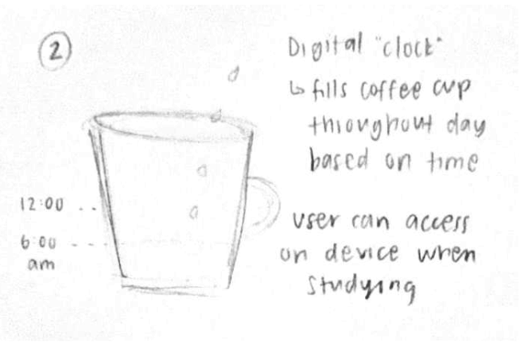
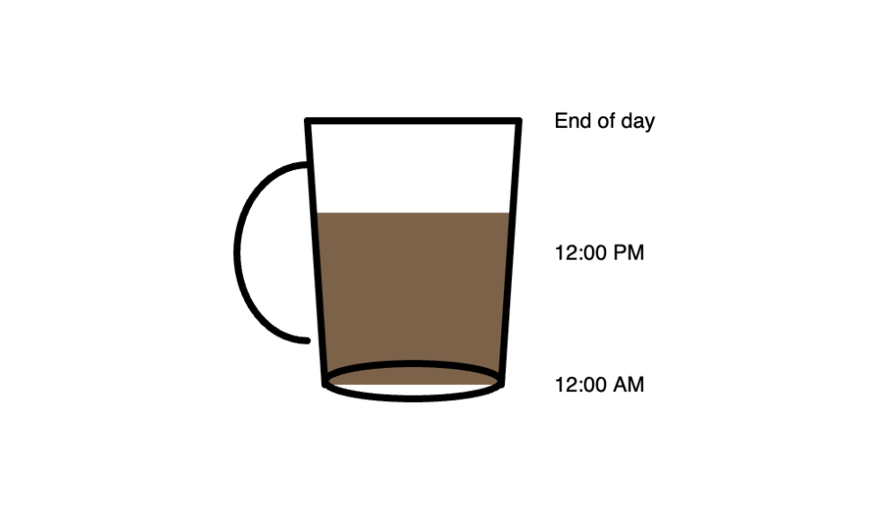
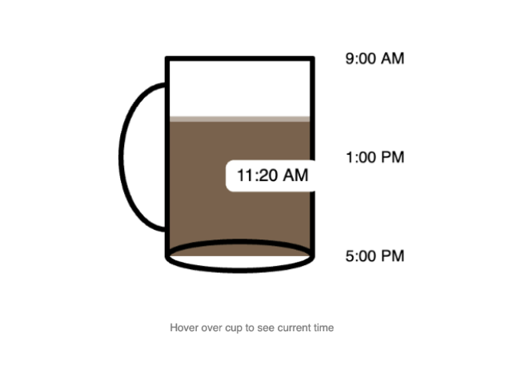
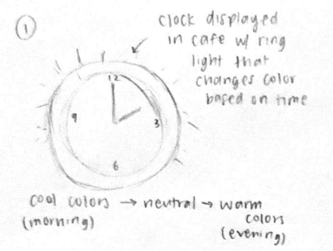
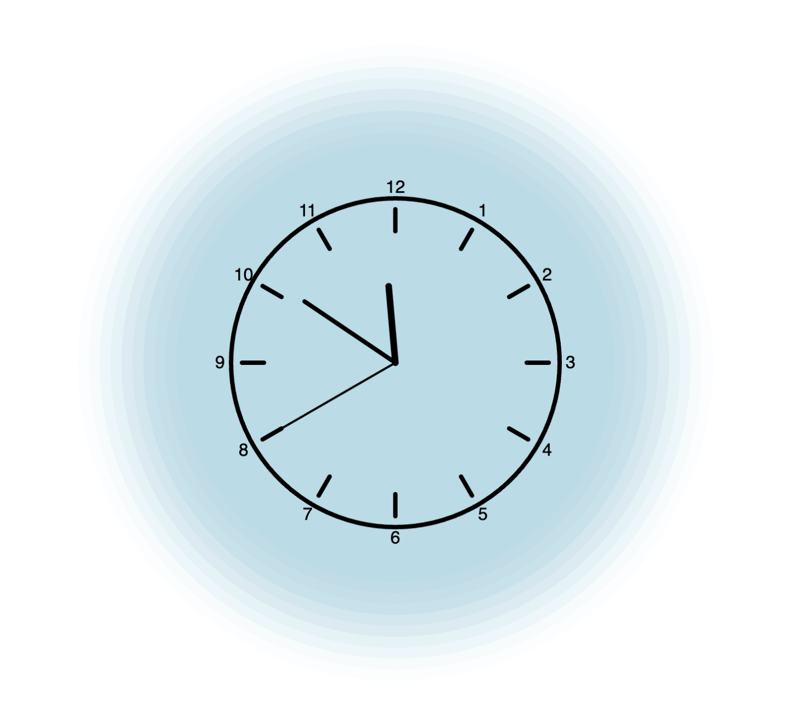
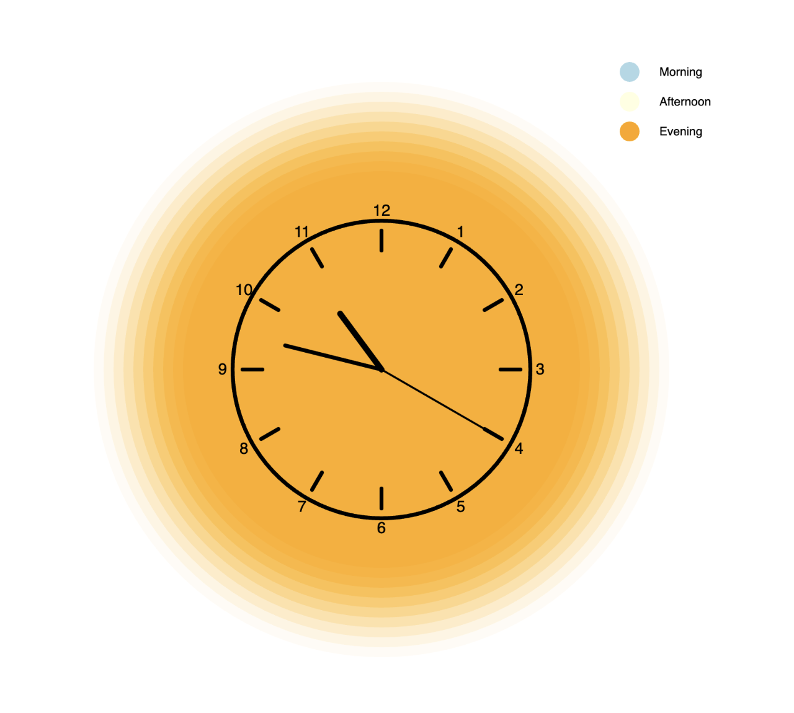
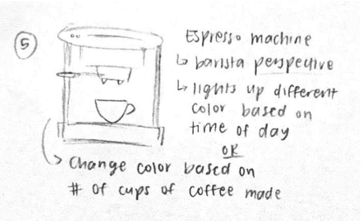
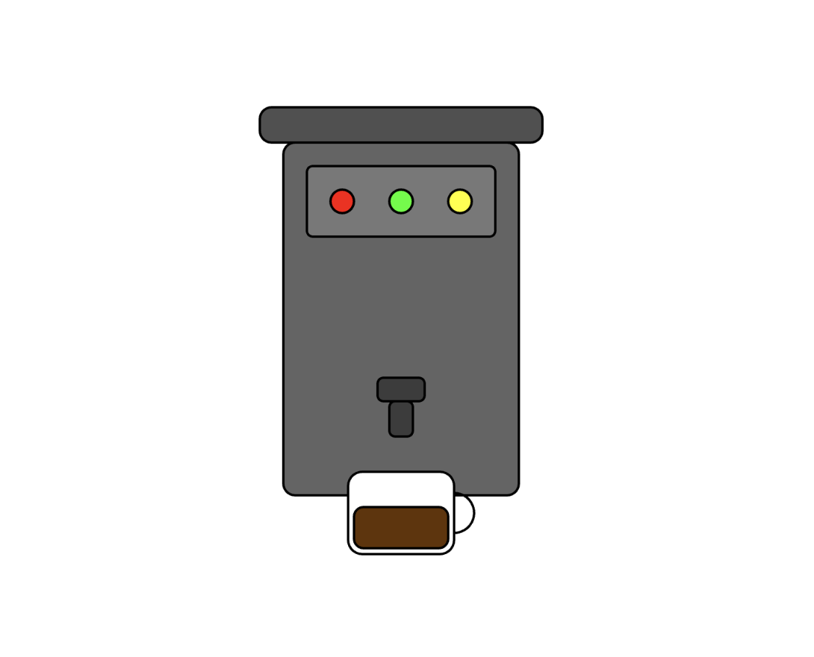
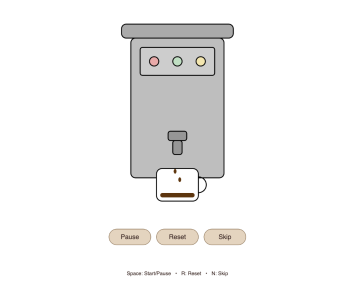

Context: This sketch visualizes a 9–5 workday by mapping time to the coffee level in a cup. It is designed for
users in a cafe or study environment, or individuals working a typical 9–5 schedule, who want a more visual sense
of time passing throughout the day.
Design decisions: One key decision was mapping time to the coffee level in a cup, since this reflects a familiar
daily experience and makes time more intuitive. I also kept the layout simple by using a minimal cup graphic with labeled reference
times so the visualization remains easy to read and not visually cluttered (9:00 am, 1:00 pm, 5:00pm). I also included a hover interaction
that reveals the exact time just in case users can’t tell based on the markers alone.
Future work: In the future, I would add small animations or transitions to strengthen the sense of progression throughout
the day. I would also explore allowing users to customize the time range or adjust visual settings to better support accessibility and different
schedules.
Sketch evolution

Step 1 — initial layout and annotated design decisions

Step 2 — second layout after peer feedback

Step 3 — refined visuals and annotations
Sketch narrative
Context: This sketch visualizes time of day for people studying in a cafe setting by utilizing
different colors to match the ambiance of the environment.
Design decisions: One key decision was combining a traditional analog clock with a surrounding
color ring so users can still read time normally while also perceiving time of day through color. I chose cool, neutral,
and warm tones to map morning, afternoon, and evening because these color associations are intuitive and easy to
interpret at a glance. I also kept the layout simple and uncluttered so the visual glow remains the primary cue.
Future work: In the future, I would allow users to customize color palettes or brightness
levels to better match their environment or accessibility needs. I would also explore letting users control how
many time intervals are represented by adjusting the number of colors shown.
Sketch evolution

Step 1 — initial layout and annotated design decisions

Step 2 — second layout after peer feedback

Step 3 — refined visuals and annotations
Sketch narrative
Context: This clock is designed for students or anyone using a Pomodoro study/work routine,
particularly in a cafe or focused work environment. It is intended to help users track focus and break intervals
in a more engaging way by visualizing time through the familiar process of making coffee.
Design decisions: One key decision was mapping timer progress to coffee filling a cup, reflecting
the Pomodoro technique. I also centered the espresso machine layout so the interaction focus remains on the cup and drip animation.
I also used warm, neutral coffee tones and simple control buttons to maintain readability and accessibility on a laptop screen, while
including a numeric countdown so users don’t rely solely on visual interpretation.
Future work: In the future, I would like to add a feature that tracks completed cycles. This way, the user will know
how many intervals they have completed in their study session. I would also like to explore allowing the user to customize the timer based
on their preferences and needs.
Sketch evolution

Step 1 — initial layout and annotated design decisions

Step 2 — second layout after peer feedback

Step 3 — refined visuals and annotations (the FINAL visual is displayed above)